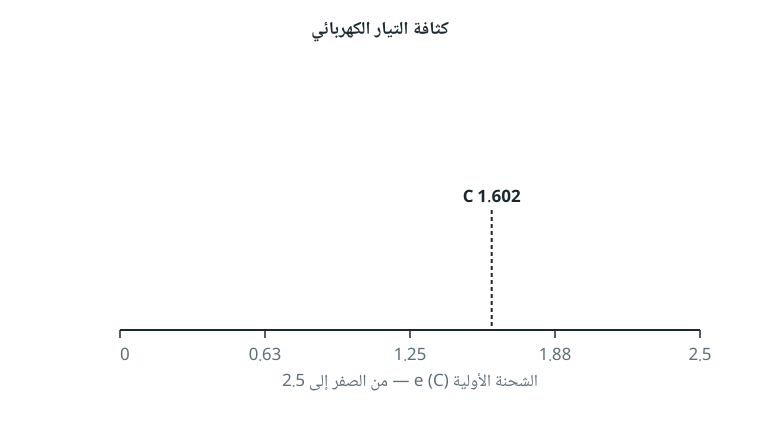

كثافة التيار الكهربائي
Electric current density
كثافة التيار هي التيار المارّ في وحدة المساحة العمودية على اتجاهه، ورمزها J ووحدتها A/m². تُستعمل بدل التيار الكلي حين يهمّنا ما يحدث داخل المقطع لا في السلك كله.
كثافة التيار الكهربائي، ورمزها J، هي التيار الكهربائي المارّ في وحدة المساحة من مقطع عمودي على اتجاه سريان الشحنة، ووحدتها أمبير لكل متر مربع. والتيار الكلي I هو تكامل كثافة التيار على مساحة المقطع. والحاجة إليها أن التيار الكلي لا يصف ما يجري داخل الموصل: سلكان بتيار واحد لكن بمقطعين مختلفين يحملان كثافتي تيار مختلفتين، والتسخين الموضعي والانجراف والحدود العملية للمواد كلها تتعلق بكثافة التيار لا بالتيار وحده. وهي أيضاً كمية متجهة، لها اتجاه سريان الشحنة الموجبة، بخلاف التيار الكلي الذي يُعدّ مقداراً جبرياً في سلك. مثال: سلك مقطعه 2.5 mm² يحمل تياراً 10 A تكون كثافة تياره 10/(2.5×10⁻⁶) = 4.0×10⁶ A/m²، أي 4.0 A/mm².
كيف تعمل الظاهرة؟
كثافة التيار تصف حركة الحاملات داخل المادة لا خارجها. في موصل معدني، الحاملات إلكترونات حرة عددها في وحدة الحجم n، وكل منها يحمل الشحنة e، وتنجرف بسرعة متوسطة v_d تحت مجال كهربائي. حاصل ضرب هذه الثلاثة يعطي كثافة التيار. وحين يضيق المقطع، تضيق المساحة المتاحة للحاملات نفسها فيزداد انجرافها لتبقى كمية الشحنة العابرة في الثانية كما هي، فترتفع كثافة التيار. هذا التفسير هو ما يجعل كثافة التيار المقياس الصحيح للتسخين الموضعي: القدرة المبددة في وحدة الحجم تساوي J·E، فترتفع بمربع كثافة التيار عند ثبات المقاومية.
العلاقة بالأرقام
J = I/A بوحدة A/m²، و1 A/mm² = 10⁶ A/m². والصيغة الجسيمية J = n·q·v_d. وقانون أوم الموضعي J = σ·E حيث σ الموصلية. والقدرة الحجمية المبددة p = J·E = J²/σ. مثال عددي: مقطع 2.5 mm² = 2.5×10⁻⁶ m²، وتيار 10 A يعطي J = 4.0×10⁶ A/m². وللنحاس σ = 5.96×10⁷ S/m، فالمجال اللازم E = J/σ = 4.0×10⁶/5.96×10⁷ = 0.067 V/m، والقدرة الحجمية 4.0×10⁶ × 0.067 = 2.7×10⁵ W/m³.
مفاهيم متقاربة
كثافة التيار ليست التيار ولا المجال. التيار عددي في سلك، وكثافة التيار متجهة في نقطة، والمجال سببها لا هويتها. وليست كثافة الشحنة: كثافة الشحنة C/m³ تصف شحنة ساكنة أو متحركة في وحدة الحجم، وكثافة التيار تصف معدل عبورها. والخطأ الشائع أن تُخلط A/m² بـ A/mm² فيُخطئ المهندس بعامل مليون. وأخيراً كثافة التيار ليست ثابتة على المقطع في التيار المتردد عالي التردد، حيث تتوزع على السطح بظاهرة القشرة، فتُستعمل كثافة تيار سطحية فعّالة.
حدود التطبيق
كثافة التيار المنتظمة J = I/A لا تصحّ إلا إذا كان المقطع منتظماً والتيار موزعاً بانتظام عليه، وهو ما ينهار عند الترددات العالية وعند الحواف والزوايا. وفي أشباه الموصلات يتغير عدد الحاملات n بشدة مع الحرارة والشوائب، فلا تصلح صيغة الموصل المعدني. وفي الموصلات الفائقة تُقاس كثافة التيار بحدّ حرج تفوقه المادة تفقد superconductivity، وهو حدّ خاص لا يوصف بقانون أوم. ولا تُستعمل كثافة التيار لوصف العزل، فالعزل يُوصف بمقاوميته لا بكثافة تيار تشغيلية.

| الكمية | القيمة | المصدر |
|---|---|---|
| الشحنة الأولية e | 1.602 176 634×10⁻¹⁹ C | [1] |
| ثابت أفوغادرو N_A | 6.022 140 76×10²³ mol⁻¹ | [2] |
| سرعة الضوء في الخلاء c | 299 792 458 m/s | [3] |
المصادر
- 1 CODATA Value: elementary charge — NIST — CODATA 2022 recommended values (2024). physics.nist.gov/cgi-bin/cuu/Value?e · اطُّلع عليه 2026-11-21
- 2 The International System of Units (SI), 9th edition (2019) — BIPM — Bureau International des Poids et Mesures (2019). www.bipm.org/en/publications/si-brochure · اطُّلع عليه 2026-11-21
- 3 CODATA Value: speed of light in vacuum — NIST — CODATA 2022 recommended values (2024). physics.nist.gov/cgi-bin/cuu/Value?c · اطُّلع عليه 2026-11-21
استشهد بهذا المصطلح
الصيغتان مبنيتان من بيانات الصفحة نفسها: العنوان والتاريخ ورابط النسخة المنشورة.
كثافة التيار الكهربائي — Electric current density. (2026). ديوان المعرفة — انفراد. https://infiradev.com/diwan/terms/term-current-density.html
@misc{term-current-density2026,
title = {كثافة التيار الكهربائي},
titleaddon = {Electric current density},
howpublished = {{ديوان المعرفة — انفراد} — مرجع علمي عربي},
year = {2026},
url = {https://infiradev.com/diwan/terms/term-current-density.html},
urldate = {2026-11-26},
note = {مراجعة علمية: hermes (مراجعة معتمدة 2026-11-26)}
}
راجعه: hermes (مراجعة معتمدة 2026-11-26) · 2026-11-26 · آخر تحديث 2026-11-21